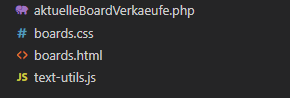
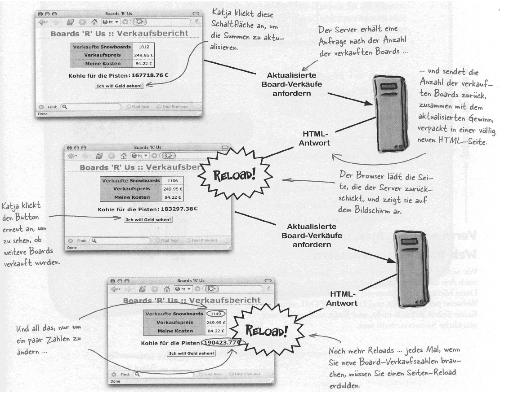

Vorlesung 5 - Ajax
03.05.2021
Dynamische Inhalte
Heute haben wir uns mit dynamischen Inhalten auf Websites beschäftigt. Dazu haben wir uns als erstes, am Beispiel eines Verkaufsberichtes, angeschaut wie das Ganze vor über 10 Jahren ablief. Wenn man damals eine dynamische Site umsetzen wollte konnte man dafür PHP verwenden und über ein HTML Formular und einen Button einen GET-Request senden. Die Nachteile dieser Herangehensweise werden offensichtlich, wenn man sich einmal mit dem Ablauf auseinandersetzt.
 Wir müssen die Seite bei jeder Abfrage aktualisieren und der Server sendet und jedes Mal den vollständigen HTML Code. Außerdem ist die alte Seite "eingefroren" bis die neue Seite vollständig geladen ist.
AJAX - ein neuer Weg
Nun haben wir einen neuen Weg kennengelernt dieses Problem anzugehen - asynchrones Javascript. Anstelle, dass wir jedes mal eine neue Seite über HTTP-GET anfordern, nutzen wir nun Javascript um diesen GET Befehl auszuführen und die neuen Daten direkt in die schon bestehende Seite einzubinden.
Dazu modifizieren wir den von Herrn Noll bereitegestellten Code.
Javascript
Als erstes fügen wir zu unserer board.html zwei script Tags hinzu. Der eine verweist auf die Hilfsdatei "util.js", der andere wird von uns direkt in der html Datei gefüllt. dort erstellen wir eine globale Variable anfrage und 3 neue Functions (erzeugeAnfrage, getVerkaufteBoards und updateSeite).
In der ersten Funktion versuchen wir einen neuen XMLHttpRequest zu erstellen und weisen diesen der globalen Variable "anfrage" zu.
function erzeugeAnfrage() {
try {
anfrage = new XMLHttpRequest()
} catch (fehlschlag) {
anfrage = null
alert('Fehler beim erstellen des Anfrage-Objekts!')
}
}
In der "getVerkaufteBoards" Funktion führen wir erst die erst genannte aus und setzen dann eine lokale Variable url auf "aktuelleBoardVerkaeufeAJAX.php" (dazu kommen wir gleich). Danach packen wir diese url mit anfrage.open("GET", url, true) noch in unsere Anfrage und senden diese mit anfrage.send(null). Da wir hier nur Daten empfangen können schicken wir ein null mit. Als letztes setzen wir noch die "onreadystatechange" Funktion der Anfrage auf unsere dritte Funktion (updateSeite). Das sorgt dafür, dass bei einer Statusänderung diese ausgeführt wird und unsere Werte auch auf der Seite erscheinen. Eine solche Funktion nennt man Callback-Funktion.
function getVerkaufteBoards() {
erzeugeAnfrage()
var url = "aktuelleBoardVerkaeufeAJAX.php"
anfrage.open("GET", url, true)
anfrage.onreadystatechange = updateSeite
anfrage.send(null)
}
Nun haben wir zwar unsere Abfrage gebastelt, müssen damit aber auch etwas machen. Dafür haben wir die Funktion updateSeite. Diese überüft erst mit einer if-Abfrage, ob der "readyState" 4 ist, es sich bei dem ready-Event also um "fertig empfangene Daten" handelt. Wenn das zutrifft holen wir uns die Antwort mit anfrage.responseText.
Dann holen wir uns die Referenzen auf unsere Objekte im DOM, die wir mit den Daten aktualisieren wollen uns berechnen dann unseren Gewinn. Die Funktion ersetzeText kommt hierbei aus der uns vorgegebenen "text-utils.js".
function updateSeite() {
if(anfrage.readyState == 4) {
// Anfragetext erhalten
var neueSumme = anfrage.responseText
// Referenzen auf die Objekte im DOM setzen
var verkaufteBoardsE1 = document.getElementById("verkaufte-boards")
var preisE1 = document.getElementById("preis")
var gewinnE1 = document.getElementById("gewinn")
var kostenE1 = document.getElementById("kosten")
// Preis und Kosten aus dem DOM abfragen
var preis = getText(preisE1)
var kosten = getText(kostenE1)
// Summer der verkauften Boards ersetzen
ersetzeText(verkaufteBoardsE1, neueSumme)
// Gewinn errechnen
var gewinnProBoard = preis - kosten
var gewinn = Math.round(gewinnProBoard * neueSumme * 100) / 100
// Neuen Gewinn schreiben
ersetzeText(gewinnE1, gewinn)
}
}
HTML
Nun müssen wir das uns vorgegebene HTML Formular anpassen. Wir entfernen die form-action und den Pfad auf den es verweisen würde und ändern den input vom Typ submit zum Typ button. Das letztere müssen wir zwingend machen, da das Forular sonst versuchen würde die Seite neu zu laden. Zum Schluss bekommt unser Button noch einen onclick Listener, der auf unsere "getVerkaufteBoards" Funktion verweist.
<form>
<input value="Ich will Geld sehen" type="button" onclick="getVerkaufteBoards()"/>
</form>
Last but not least - PHP
Nachdem unsere HTML-Datei nun vollständig umgestaltet ist müssen wir uns der ominösen "aktuelleBoardVerkaeufeAJAX.php" zuwenden. Diese hatte in der ursprünglichen Version, neben dem neuen Wert, auch den kompletten DOM noch einmal mitgeschickt. Jetzt brauchen wir allerdings nur noch die Anzahl verkaufter Artikel, also fliegt der HTML-Teil raus und übrig bleibt ein echo, dass den Wert ausgibt.
<?php
// Mit beliebiger Anzahl verkaufter Boards starten
$gesamtVerkauft = 1012;
// Neue Verkäufe nachbilden
srand((double)microtime() * 1000000);
$gesamtVerkauft = $gesamtVerkauft + rand(0,1000);
echo $gesamtVerkauft;
?>
Der Code in Aktion
Nun sind wir bereit für die Demo. Da der restliche Code im Video gezeigt wird binde ich ihn hier nicht noch einmal komplett ein.